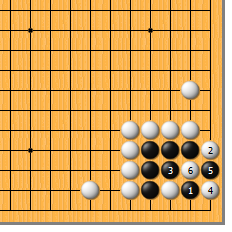
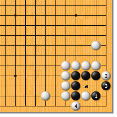
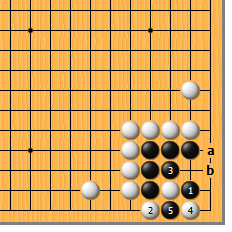
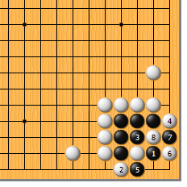
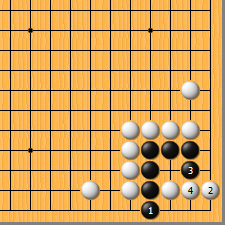
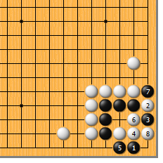
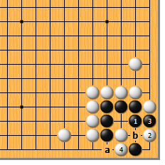

|  |  | |
| 图1 白的夹是严厉的一着。黑1反夹，白2扳紧气，黑3打只此一手！白4跳靠时，黑5扑入成劫。若想不到黑3，则凶多吉少。
| 图2 黑1、白2时，黑3如随手一挡，立即招来杀身之祸。白4渡，黑苦于气紧不能在a位打，必死。对白2的扳千万要注意！ | |
|  |  | |
图3 黑1夹时，白2直接渡也是一种变化。黑3仍然只能打吃，白4扳，黑5提成劫。黑3如4位立，白a先手扳，黑b挡时白5接，黑死。 | 图4 黑1、3后，白4直接打也行。以下变化至白8提，也是打劫。此图与1图大同小异。
| |
|  |  | |
图5 黑1如采用立的方法阻渡就不行了。白2跳好手，黑3时白4粘，黑差一气被吃。前面已经说过多次了，不清楚的朋友可以查一查。 | 图6 黑1虽为急所，此时却无用处。白2扳好手，黑3挡时，白4、6、8次序精妙，黑死。
| |
|  | 您的高见 | |
图7 前图黑3如于1位拐，白2点好手。黑3断，白4挡，a位渡和b位粘成见合，黑回天乏术。黑1如2位尖，白1扳，黑3断时白a渡，黑也死。 |